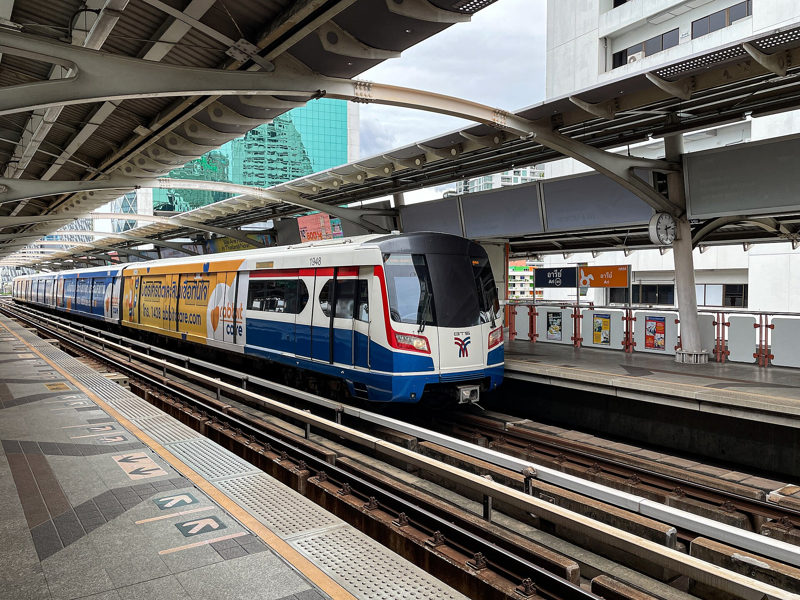
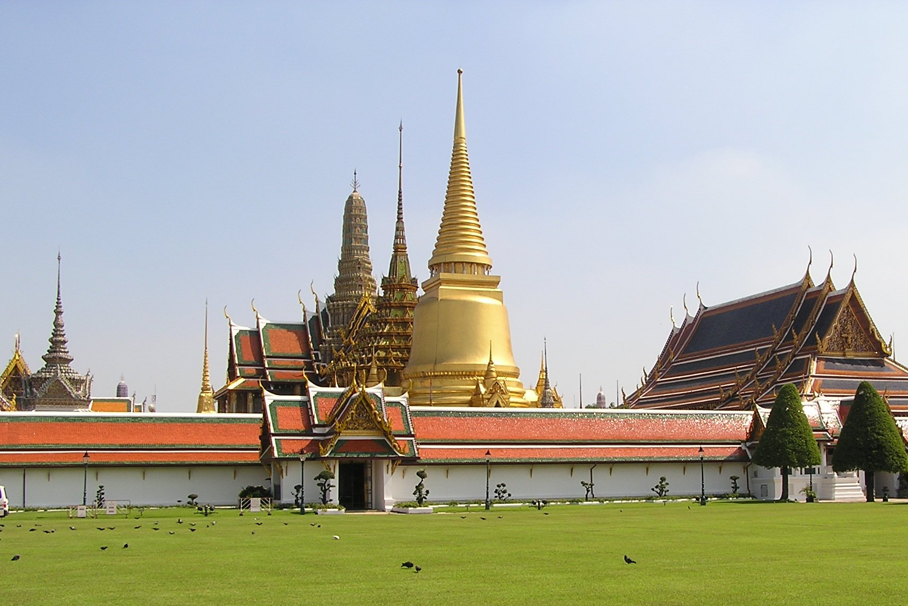

不趕景點
每天只有一條主軸，沒興趣可立刻縮短。

第一次去泰國，不用追經典清單。用 BTS、MRT 與河船串起好吃、好拍與三次確定的 90 分鐘按摩；D3 依即時雷達切換富裕號或室內雨備。
所有動線都經過「雨季、不愛久逛、不想塞在車上」的過濾，不用為了打卡破壞放鬆感。
每天只有一條主軸，沒興趣可立刻縮短。
BTS、MRT、ARL 與河船，避開曼谷路面塞車。
三次確定的 90 分鐘，D3 只有雨天才加 Samatha 候補。
戶外景點都有同區域的冷氣替代方案。
這是依方位繪製的行程示意圖，不依賴容易載入失敗的線上圖磚。點 D1–D4 看當天方向；右側每一站都各自連到唯一的 Google Maps 地點。
示意圖只表示方位，非導航比例；下方每張卡片都是可直接導航的精確地點。
時間預留了迷路、降雨與休息，不需要將每一格當成考試。點景點名稱直接通往對應的 Google Maps 結果。

早上從南勢角搭軌道前往桃園機場；到曼谷後不叫 Grab，ARL 接 BTS 直達飯店。傍晚只逛 EmDistrict、吃第一頓泰菜，最後用飯店旁 90 分鐘精油按摩收尾。
過安檢後吃熱食、粥與咖啡，不另跑航廈餐廳；若當天資格或時段不符，就在登機區買三明治，不犧牲登機時間。
點 Spanish Latte／Americano，加一份甜點共享即可。優點是就在 EmQuartier、空間好拍；社群評價重點是景觀與品牌穩定，不是追求曼谷最低價。
第一次到泰國最穩：冬蔭功、綠咖哩／蟹肉炒飯、魚餅選 2–3 道共享。近期食記與評論普遍肯定菜色完整、環境乾淨；比街邊貴，但抵達日的舒適與動線值得。
不想吃太撐就各點一碗豬／牛船麵（約 THB 149 起）再共享甜點。網路共識是味道穩、環境舒服但比街頭船麵貴；仍比正式泰菜省，也能準時接按摩。
想喝再買一杯共享，沒有要刪掉 % Arabica。抵達日太累就延到 D4；店在飯店生活圈，不值得為它另跑一趟。
只列備選，不刪 Kub Kao Kub Pla／Thong Smith。店在 Sukhumvit 26、營業時段短且週日休；D1 若入境順利又想吃在地小店再去，班機延誤就放棄。
BTS 到 Thong Lo 一站、外帶為主；只有 D1 體力足夠才去，不取代原本晚餐。若超過 19:20 還沒離開餐廳，直接取消，保護 20:30 按摩。
價格為 2026 年查得菜單與近期消費區間，商場餐廳可能另加服務費／稅。D1 主線仍是 EmDistrict 餐廳；興興與 Mae Varee 都只是備選，不能為了全吃到而壓縮按摩。

用一小碗豬肉湯麵開始，接著搭 BTS 到 Ari：NANA 負責精品咖啡與漂亮空間，Ong Tong 負責有泰國特色的北泰午餐，再順逛 Café Amazon Experience 旗艦店。中午由 Ari 直達 Asok 做 Health Land 90 分鐘精油按摩。傍晚先逛拉差達火車夜市，最後才回 Phrom Phong 喝 AIRE；發發喝完可以直接步行回飯店。若晚間持續大雨，夜市改成 Siam Center 與 Siam Discovery，酒吧仍放最後。
各點一小碗：一碗乾拌冬蔭、一碗清湯共享，再加脆魚皮。2025–26 菜單小／中／大約 THB 60／70／80；近期旅客一致提醒「辣是真的辣」，先點不辣再自己加。
咖啡派點 Dirty 約 THB 165／Iced Americano 約 THB 145；不喝咖啡可點 Yuzu Sparkling 約 THB 165，甜點只共享一份。社群喜歡花園與咖啡品質，但也常提到週末人多，早到正確。
點雞腿／牛肉 Khao Soi 各一碗，想多試再共享北泰香腸。網路評價不是「全曼谷無敵」，但在 Ari 動線內、價格合理、北泰辨識度高，是這趟最適合的組合。
保留 NANA，這站重點是看 Ari 旗艦概念空間；只點一杯共享，不再加甜點。它就在 BTS Ari 2 號出口旁，取代原本無目的的街區短走。
放棄 17:00–18:00 Happy Hour，換成「喝完直接回飯店」的正確順序。各點一杯調酒／無酒精飲品，再共享一份小食即可；發發想睡時步行約 2–5 分鐘回 Mercure。
採「一鹹一烤一甜」：船麵／打拋飯、烤海鮮或泰式香腸、芒果糯米飯，再各一杯飲料。新市場 2026/3 才重開，攤位與價錢仍會變；先看明碼標價，不追巨大排骨山或無標價海鮮。
先在 Siam Center 餐飲樓層找泰菜或簡餐，再逛 Siam Discovery 設計選物。這個備案優點是全程 BTS＋連通道；不是為精品而來，而是用舒服環境換掉雨中的夜市。
D2 食量刻意拆小：早餐小碗、NANA 只共享甜點、Amazon 只共享一杯、Ong Tong 早午餐、AIRE 只點一輪，晚間才有胃逛夜市。AIRE 價格以官方 2026 菜單為準。

上午進大皇宮與玉佛寺，中午搭日間河船到 ICONSIAM。下午全部留在冷氣內，17:00 依 TMD 即時雷達決定：晴天才現場訂富裕號看點燈後的鄭王廟；下雨不搭船，改為 ICONSIAM 晚餐與 Samatha 按摩候補。
只點一份早餐共享＋兩杯飲品，07:30 必須離開。若當日未開或出餐慢，直接改便利商店飯糰／三明治；08:30 進大皇宮比完整早午餐重要。
點經典 Pad Thai 約 THB 119 起＋蛋包版本共享，再點一瓶鮮橙汁。優點是有冷氣、免跑舊城排長隊；味型偏甜，若兩人不愛甜炒麵就直接改下一張。
各挑一道泰國區域小吃再共享甜點，選擇最多、場景漂亮；但近期社群也常說座位擠、價格比外面高 2–3 倍。把它當「一次看很多泰國小吃」的體驗，不當全曼谷最高 CP 美食街。
價值是兩層樓與昭披耶河景，不是咖啡 CP。近期評價常提窗邊位很熱門；若排隊或沒景觀位，只上樓拍河景，不硬買，把時間留給 D Bake 與河岸休息。
它是現烤泰式蜂巢鬆餅，不是午餐；優先香蘭口味，也有泰奶與椰子。現做約等 5–10 分鐘，買到就趁熱吃，不適合帶回台灣當長程伴手禮。
20:00–22:15 國際／海鮮自助餐；真正價值是露天河景與點燈後的鄭王廟，不把餐食品質當唯一理由。17:00 雷達通過且仍有上層席才當日購票。
確定不搭船後才吃完整晚餐；18:30 離開前往 Samatha 詢問 19:30 候補。若按摩沒位，就留在商場吃甜點、補土產，約 20:30 回飯店。
D3 不再安排 Talat Noi／Yaowarat。午餐正常吃、D Bake 當點心；晴天把晚餐留給富裕號，下雨才在 ICONSIAM 吃完整晚餐。P.S. I Love You 僅在 D1 EmQuartier 缺貨時補買。

早上只排飯店附近的早午餐，09:20 前完整打包，09:35 先退房寄行李。ThaiThai 開門就按 90 分鐘，吃完輕午餐再取行李，接著 BTS 轉 ARL 去機場。
酸種可頌約 THB 110、火腿起司可頌約 THB 175，再各一杯咖啡；網路評價多認可自家酸種與咖啡，也坦白屬曼谷偏高價早午餐。D4 時間有限，選簡單烘焙品，不點等候久的大盤餐。
08:00 才開門，花園白屋與舒芙蕾更好拍，環境勝 Sarnies；但會壓縮打包，所以只在前一晚已打包 80% 時選。這正是「環境好一點」的 B 備案，不是主線。
點現炒泰菜／打拋類，一人一盤，不加太多小菜。2025–26 評論重點是出餐快、可調辣、商場裡算合理；不是全旅程最驚豔的一餐，但最符合回程準時與腸胃安全。
如果 D1 沒吃到，最後補船麵；基本牛／豬肉麵約 THB 149–219 起，另可能有 10% 服務費。比街頭貴，但出餐、座位與行李日舒適度更穩。
只列備選，不刪 Zaozen／Thong Smith。當天想吃炒麵才進 Gourmet Eats，選現場明碼標價、排隊短的 Pad Thai 櫃；12:35 前一定吃完。
可兩人共享一份雞飯搭 Pad Thai，也可完全略過；若 D1 已吃興興，就不必再為同類料理重複。商場分店勝在乾淨、出餐與回程動線，不代表比街邊本店更好吃。
若午餐因按摩或取行李延誤，直接照 13:15 出發，過安檢後再買三明治／簡餐；不要為了吃完商場午餐壓縮國際線報到時間。
D4 原則只有一個：12:55 回飯店、13:15 離開不能動。Emporium Pad Thai／水門雞飯只加為備選，不刪原本餐廳；D1 超市若有缺貨，D4 最多補買 10 分鐘。
照片不只是裝飾：每張都標出這是哪裡。點擊後可放大並開啟原始圖片來源；店家室內無合適授權圖片時，不用假照片冒充。
預約與預算將「必要」和「可有可無」分開。所有價格都要在 2026/9 出發前以店家實際回覆重新確認。
重複 ThaiThai 是刻意保護抵達日與退房日；D2 改用 Health Land，把品質、90 分鐘精油與價格拉回平衡。D3 晴天搭船不按摩，下雨才詢問 Samatha 候補。
90 分 Aromatherapy Body Massage B；官方現價 THB 1,200／人。環境與訓練制度穩定，兩人比 Divana 省 THB 1,830。
你和發發不買精品，所以我把「品牌數量」排除，僅保留建築、設計、咖啡、泰國食物與雨天價值。
只看：戶外 Water Garden／空中步道、6F Helix 餐廳、% Arabica。Emporium 只去 4F Gourmet Market／Gourmet Eats 與 OH! RiCH 換匯；高樓精品層可整段略過。
只看：G／GM EM Market Hall 吃東西、2F 科技／設計店、3F 市中心 IKEA。它的價值是餐飲與新建築，不是精品；D4 午餐只留在低樓層，別被 IKEA 單向動線拖走。
順序：6F 午餐 → 7F 河景／Starbucks Reserve → GF SookSiam → 河岸 Apple Store 外部。社群對餐飲價格評價兩極，但對建築、河景與「不買東西也值得」的共識很強。
只看：泰國設計師品牌、快閃與視覺陳列。你們不買精品也不會無聊；若只是一般連鎖品牌直接跳過，用室內天橋接下一站。
只看：生活風格、設計選物與空間陳列。它不是「血拼型」百貨，較像可逛的設計展；正好符合發發覺得環境不錯就願意體驗的條件。
官方菜單／營業資料決定可不可行；Google、Wongnai、近期 YouTube、Reddit 與 IG／Threads 討論只用來看共識與缺點。凡是「好拍但排太久」「附餐拉高價格」「遠離軌道」都降為備案。
D1、D2、D4 都建議預約；D3 必須保持彈性，晴天臨時買船票、下雨才詢問按摩。
以 1 THB 約當 NT$1 保守觀念編列，不含購物與臨時泰服攝影。
Health Land 取代 Divana 後，三次確定按摩約 NT$6,000；晴天富裕號兩人另抓約 NT$3,000–3,400。落地支出改抓 NT$22,000–24,000、最高預留 NT$26,000。Samatha 雨天候補與土產採購未納入固定支出；大額購物及 AIRE 追加第二輪也不在此金額內。
勾選結果只儲存在這台裝置，重新開網頁仍會保留。
只連到單一官方結果，不丟給你一長串搜尋選項。